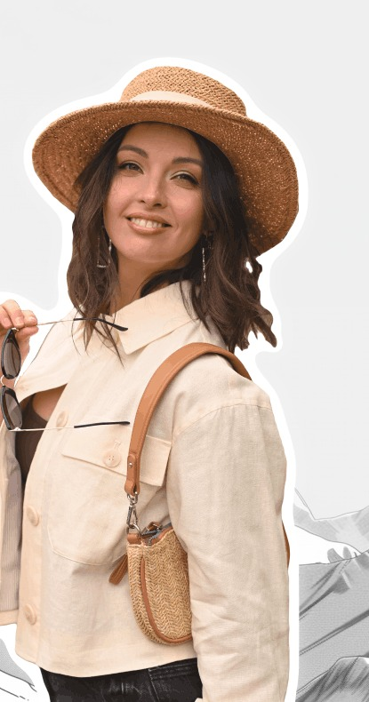

Школа Тамары Кавтарадзе
Учить грузинский легко! Вместе с Тамарджобой
Группы в Тбилиси и Батуми, онлайн и индивидуально.
Узнай свой уровень языкаТест прямо здесь, 15 вопросов
Выучи первые слова
Выучи алфавит за 10 минут
- 9+лет
- обучаем грузинскому языку
- 5 000+
- учеников прошли обучение
- 80 000+
- подписчиков в соцсетях
Узнайте свой уровень
15 вопросов, около 3 минут, результат сразу
Выберите, как учиться
шесть путейГрупповое обучение
Онлайн по 4–6 человек и офлайн в Тбилиси и Батуми
Индивидуальные уроки
8 уроков по 60 минут, программа под вас
Видеокурсы с Тамарой
Уроки по 15 минут, «Алфавит» со скидкой 50%
Гражданство Грузии
Встречи, тесты и тренажёр для экзамена
99% учеников сдают экзаменДетский грузинский
Пособие на 16 уроков с аудио
Магазин и разговорники
Пособия, тесты, интерактивные разговорники
Путь ученика
четыре шага-
01
Узнайте свой уровень
Тест, 15 вопросов.
-
02
Подберём формат
Группа, онлайн или индивидуально.
-
03
Занятия
2 раза в неделю по 60 минут и разговорная практика.
-
04
Следующий уровень
A1 → A2 → A2+.
Почему у нас получается
- Живой языкУчим разговаривать и понимать повседневную речь.
- Авторская программаСвои отработанные учебные материалы.
- Без языкового барьераДоводим до нужного уровня.
- Преподаватели-билингвыОбъясняют по-русски и по-грузински.
Отзывы учеников
О школе

Основательница
Тамара Кавтарадзе
Преподаёт грузинский с 2011 года. Школа Tamarjoba работает с 26 мая 2017 года.
-
ВикторияЛюбит читать, живёт в солнечной Грузии
-
Нана ОболадзеУчит с терпением и любовью к творчеству
-
АнушФилолог грузинского языка, трилингв
-
Элене ГорадзеГоворит на пяти языках
-
Джейн ХабазиМагистр международных отношений, дипломат
-
Майя ГоргошидзеКомфортная обстановка и разные стратегии
-
ИнгаВидит чудо в каждом дне
-
НиноНа уроках много говорим по-грузински